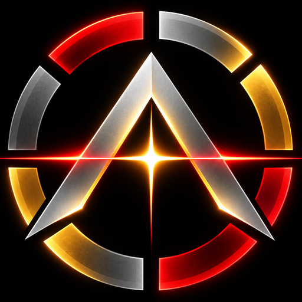
13 projects in the Gallery of Rogues, compiled since August 2026, and the main spine they serve.
GOAL · DRAFTTwo network scores that separate signal from background as well as possible while staying independent on background, so the ABCD estimate of the background in the signal region closes, with a stated confidence.
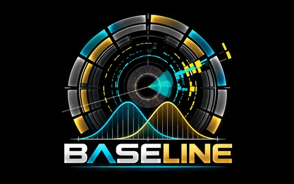
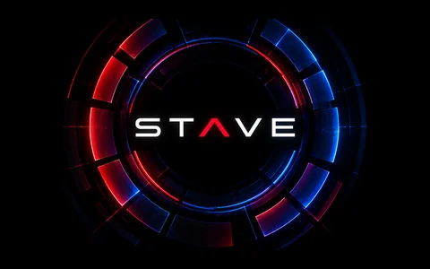
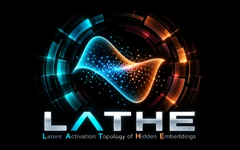
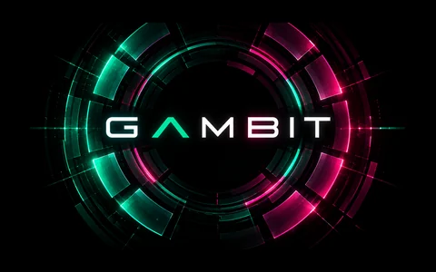
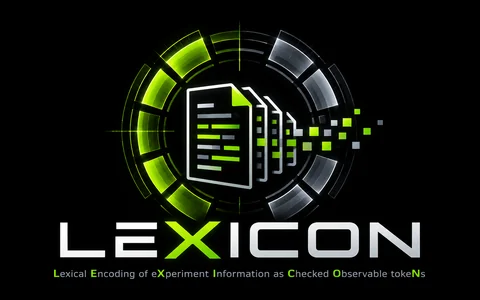
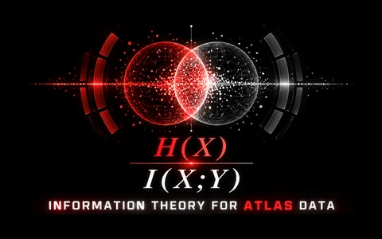
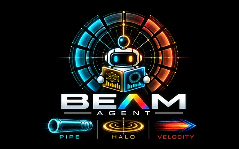
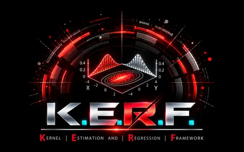
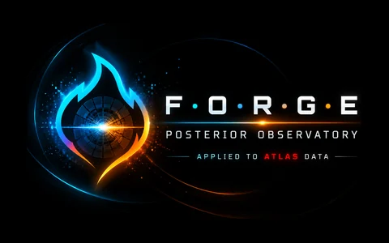
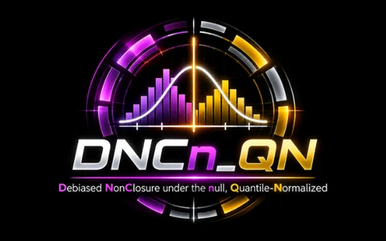
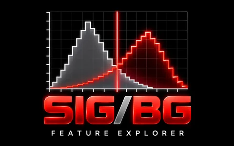
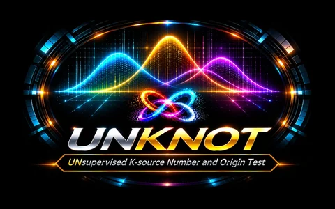
One general project, as the Gallery of Rogues lays it out.
Compiled and dreamed up since August 2026. Every project page in the Gallery of Rogues carries the same parts; this is what each one holds today.
| PROJECT | STATUS | FIRST ENTRY | OUTLINE | QUESTIONS | COMPONENTS | LITERATURE | PROGRESS | PRIVATE CODE | PRESENTATION | PUBLIC SITE | CODE |
|---|---|---|---|---|---|---|---|---|---|---|---|
| BASELINE | ACTIVE | Oct 26 | ● | 3 | 10 | 8 | 12 | ● | — | — | internal |
| STAVE | ACTIVE | Jul 26 | ● | 3 | 3 | 19 | 9 | — | — | — | internal |
| TRUSS | ACTIVE | Oct 26 | ● | 3 | 3 | 30 | 16 | ● | ● | — | internal |
| LATHE | PLANNING | Oct 26 | ● | 3 | 4 | 26 | 13 | — | — | ● | internal |
| GAMBIT | ACTIVE | Aug 26 | ● | 3 | 3 | 18 | 10 | — | — | — | internal |
| LEXICON | ACTIVE | Jun 26 | ● | 3 | 7 | 49 | 34 | ● | — | — | internal |
| INFO THEORY | ACTIVE | Aug 26 | ● | 3 | 0 | 3 | 8 | — | — | — | internal |
| BEAM AGENT | ACTIVE | Sep 26 | ● | 3 | 5 | 10 | 11 | — | — | — | internal |
| KERF | PLANNING | Jun 26 | ● | 3 | 5 | 17 | 17 | ● | — | — | internal |
| FORGE | ACTIVE | May 26 | ● | 3 | 5 | 12 | 11 | — | — | ● | public |
| DNCn_QN | ACTIVE | Oct 26 | ● | 3 | 3 | 5 | 9 | — | ● | — | internal |
| SIG/BG | ACTIVE | Oct 26 | ● | 3 | 4 | 5 | 8 | — | — | ● | public |
| UNKNOT | ACTIVE | Nov 26 | ● | 3 | 2 | 11 | 11 | — | ● | — | internal |
Which inputs separate signal from background, and which only appear to?
OUTranked candidate features per region
public site live
Which features go to NN1 and which to NN2, so the two scores stay independent?
OUTNN1 and NN2 feature rosters per region
barrel result; endcap planned
Train both networks on one fixed procedure, with DisCo decorrelation and the queen's closure term.
OUTa locked baseline per region
Stage A running
Is the trained ABCD plane healthy: does it close, and are the pulls what the counts allow?
OUTa verdict per plane, with its health checks
checks listed; project to be named
What we (Nathan) have picked up in the course, and where each one would go in the project line.
| TECHNIQUE | WHERE WE (NATHAN) MET IT | WHERE WE (NATHAN) WANT IT |
|---|---|---|
| Tokenization, lemmas, custom tokenizers | PA1 · deck 1.3 | LEXICON: binned features become tokens; an event is a bag of tokens |
| Word embeddings, cosine similarity | PA2 · decks 2.2, 2.4 | LEXICON / Evt2Vec: one vector per token and per event |
| Word Mover's Distance | PA2 · deck 2.4 | Compare events, or signal and background populations, as token distributions |
| TF-IDF + logistic regression, class weights | PA3 · decks 2.1, 3.1 | A plain baseline on token bags before any deep model; class weights for rare signal |
| n-grams, co-occurrence, PMI | decks 2.1, 5.1 | LEXICON grammar search; INFO THEORY mutual information between features |
| Skip-gram (word2vec) | deck 2.2 | Evt2Vec: token vectors from co-occurrence in events |
| Masked language model (BERT-style) | decks 5.1, 5.2 | CutFormer: masked-token surprise as a label-free ABCD axis |
| Autoregressive next-token model | decks 5.1, 5.3 | Exact-likelihood surprise; signal-or-background from an event's token list |
| RNN / GRU | decks 4.1, 4.2 | Sequence model over tokens in a measured order |
| Attention / transformers | decks 4.6, 5.3 | LEXICON across the board; attention add-ons for TRUSS, KERF, FORGE, LATHE |
| Retrieval over a document library | deck 6.3 (RAG) | BEAM AGENT: local research agent over the tokenized literature |
LEXICONtokens, embeddings, masked and next-token models
BEAM AGENTretrieval over the tokenized literature
PA = graded assignment completed this term (red). Deck numbers are the INFO 555 lecture decks, Fall 2026; every row was checked against them.
DNCn_QN: Debiased NonClosure under the null, Quantile-Normalized. Added on top of DisCo while the two networks train.
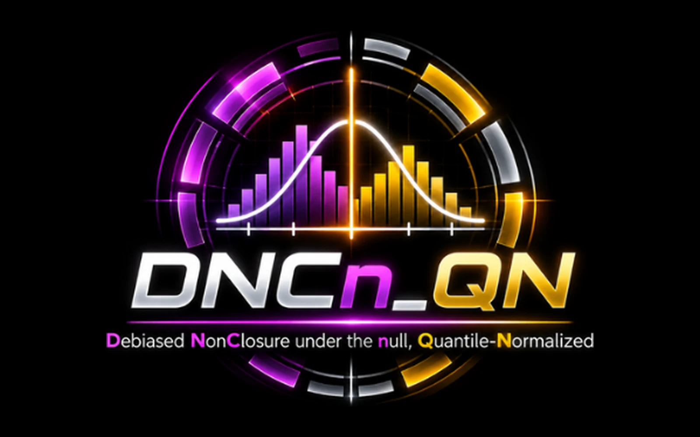
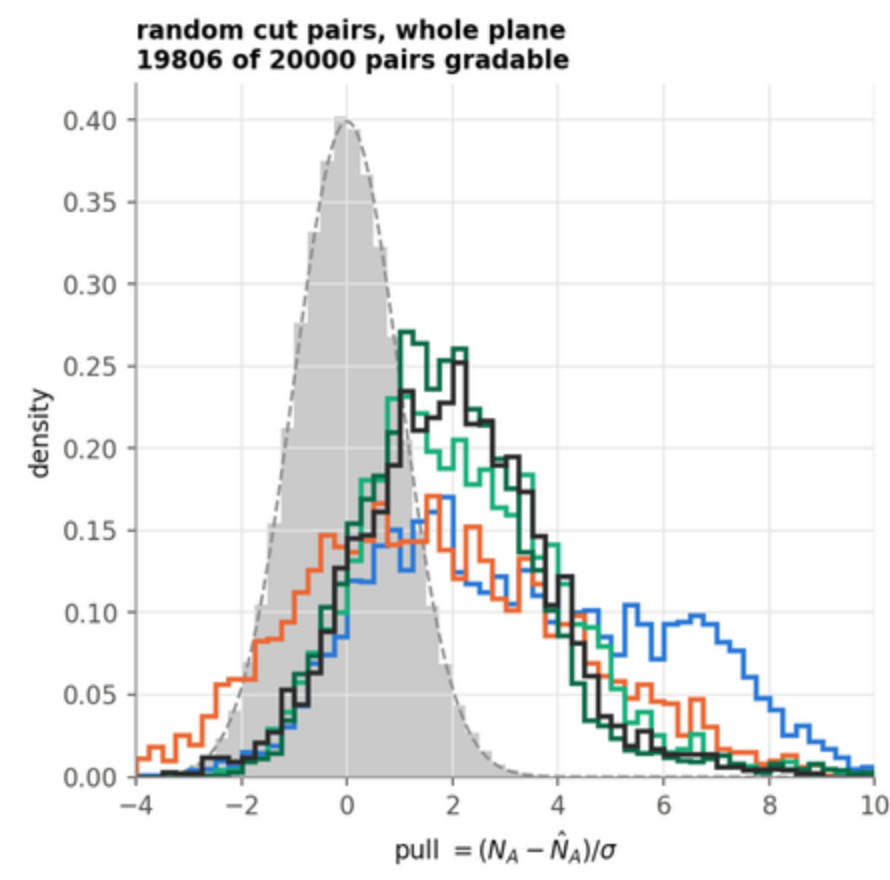
shuffle nullDisCo α8+ QB β 0.1+ QDR β 0.025+ QDR β 0.05+ \(\hat\tau^2\)
All queen arms are mk2 (the source legend's "mk1 (QB)" is the mk2 QB). 20,000 random cut pairs · 50 runs · 34,970 background each.
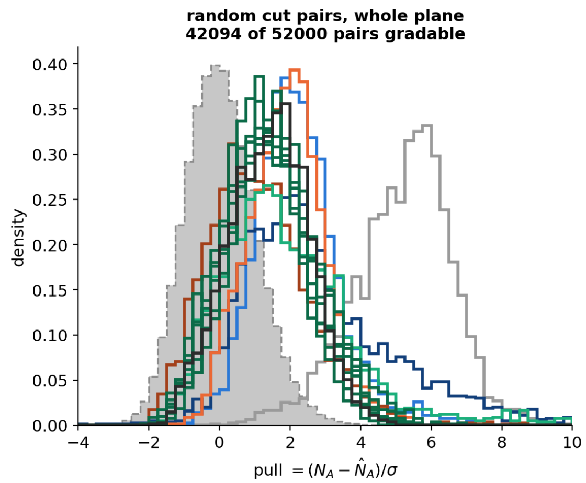
shuffle nullBCE onlyDisCo α2DisCo α8+ QB+ QDR+ \(\hat\tau^2\)QDR alone
52,000 random cut pairs · 130 runs on fresh seeds · 1,089 background each.
Both are mk2 queens, added on top of DisCo α 8. Endcap R15 confirm block: 34,970 background events, seeds 3000–3009, 10 per arm.
The epoch is chosen on \(\mathrm{BCE}_1 + \mathrm{BCE}_2 + \alpha\,\mathrm{dCor}^2\); \(L_Q\) never picks it.
QB: training batch, probabilities, 3 cuts. QDR / \(\hat\tau^2\): 4,096-event background draw, logits, \(K = 9\) cuts in \([0.3, 0.8]^2\) (background quantiles).